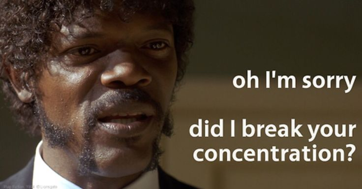
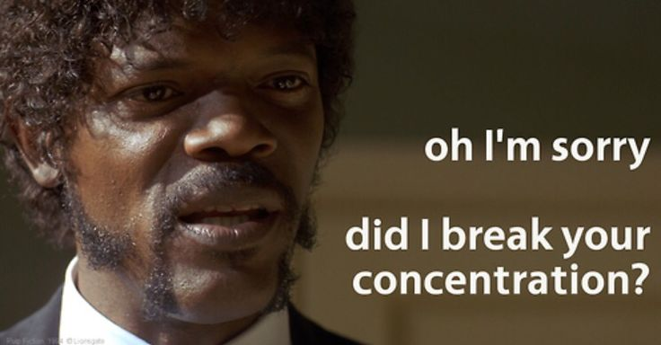
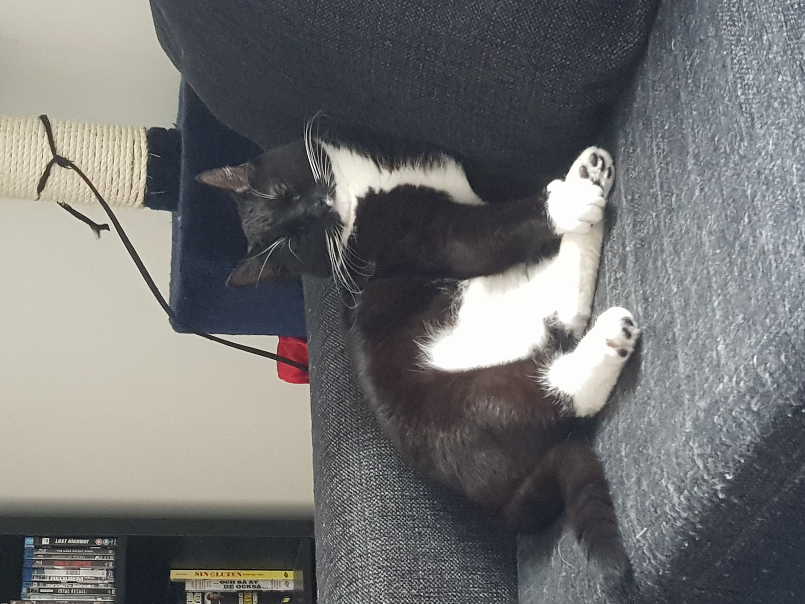
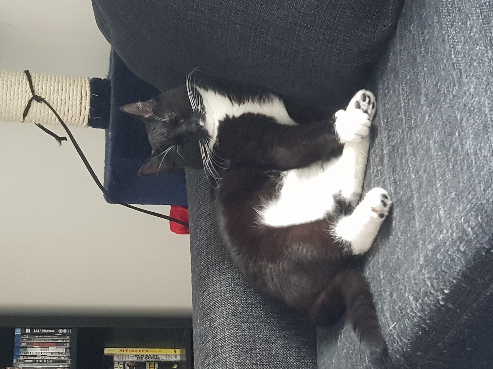

Här nedanför följer Vincents backstory
Vincent föddes november 1991 och växte upp i Täby med sin mor, far och två yngre bröder (Marcus och Jonas) Första gången han kom i kontakt med kod var i programmet "Dreamweaver" som tillhandahölls av en kurs för unga i att göra hemsidor. Hemsidan bestod mest av hur frälst han var av det då nysläppta spelet GTA-San Andreas. Han har sedan 17-års ålder byggt alla sina stationära datorer av lösa komponenter och det är en fröjd!
Spola fram till hösten 2024 när han av en slump snubblade över Python för första gången i en digital mattebok för matte 3C. Mattekursen fick betyget IG, främst för att programmeringen var roligare även om matematiken var utmanande och stimulerande. Nu har Vincent precis börjat sin DevOps-resa på Chas Academy och han ger skolan 10 av 10 toasters!
 


 
